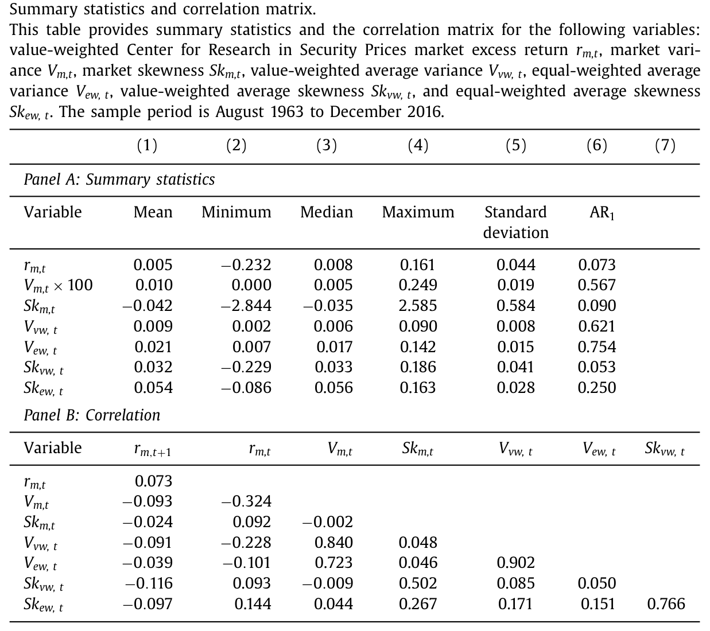
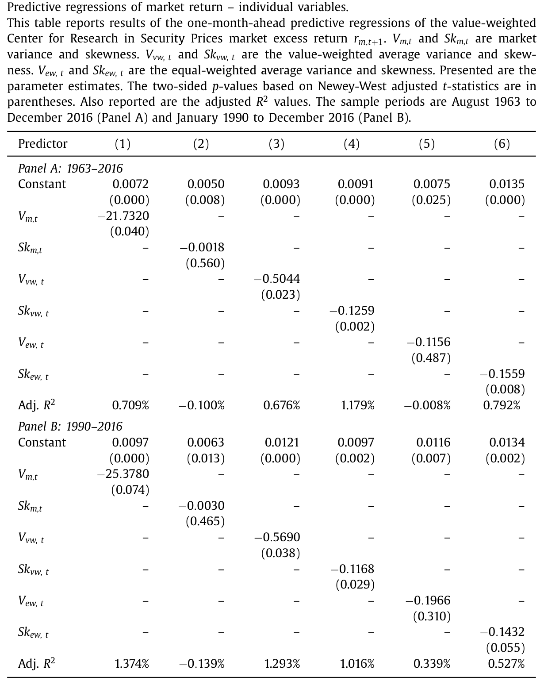
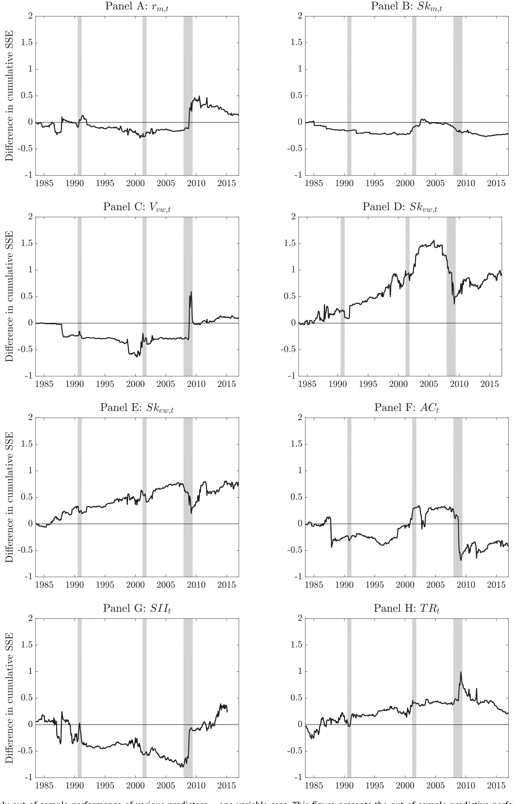
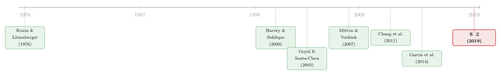

市场的下一步，藏在一万只股票的「歪斜」里
本文读的是 Jondeau, Zhang & Zhu (2019, Journal of Financial Economics)：把每个月、每只股票的收益偏度横截面平均，得到一个叫「平均偏度（average skewness）」的指标，它能负向预测下个月的市场超额收益——当月平均偏度高一个标准差，下月市场收益平均低 0.52%。这件事，单只股票的偏度做不到，市场指数自己的偏度也做不到。
1 一个被忽略的「平均数」
先从一个老问题说起：市场下个月会涨还是会跌，能不能提前知道一点点？
几十年来，金融学家几乎把能想到的预测变量都试了一遍——股息率、市盈率、期限利差、违约利差、市场波动率……结果大多差强人意，样本内看着像那么回事，一拿到样本外就原形毕露（关于这场旷日持久的拉锯，可参见《市场太「集中」，资本就会配错地方》与《风险溢价，是「消失」了，还是「断」掉了？》）。
偏度（skewness），也就是收益分布的「不对称程度」，本该是这场游戏里的一员。直觉上它很有故事：负偏度意味着「偶尔来一记暴跌」，是一种尾部风险 (tail risk)；正偏度意味着「偶尔中一次大奖」，对应投资者的博彩偏好 (gambling preference)。三阶矩资本资产定价模型（three-moment CAPM）早就告诉我们，投资者厌恶负偏、偏爱正偏，因此偏度应当被定价。
可问题是，当人们把市场指数自己的偏度（market skewness）拿来预测市场收益时，数据几乎不给面子——Chang, Zhang and Zhao (2011) 发现市场偏度对未来市场收益的预测「又弱又不稳」。三阶矩 CAPM 的这个推论，在市场层面上落空了。
于是一个自然的问题是：偏度这条线索，难道就这么断了？
本文的回答是：你找错地方了。别看市场指数的偏度，去看「每只股票偏度的平均」。 这两个东西，听起来像近义词，其实是两码事。
2 平均偏度，到底「平均」了什么
这里要先把两个容易混淆的量分清楚，这是全文的命门。
- 市场偏度
Sk_m,t：先把市场指数当成一个整体，算它日收益序列的偏度。它主要由股票之间的共同偏度（coskewness）驱动，反映的是「大家一起暴跌」这种非线性联动。 - 平均偏度
Sk_w,t：先逐只股票算它自己这个月的（标准化）日收益偏度Sk_i,t，再把成千上万只股票的偏度横截面平均起来。它捕捉的是「单只股票各自有多歪」的平均水平，本质是特质偏度（idiosyncratic skewness）的聚合。
作者把单只股票 i 在第 t 月的标准化偏度定义为：
$$ Sk_{i,t} = \sum_{d=1}^{D_t} \tilde{r}_{i,d}^{\,3}, \qquad \tilde{r}_{i,d} = \frac{r_{i,d} - \bar{r}_{i,t}}{\sigma_{i,t}}, \quad \sigma_{i,t}^2 = \sum_{d=1}^{D_t}(r_{i,d}-\bar{r}_{i,t})^2 . $$
其中 r_{i,d} 是股票 i 第 d 天的超额收益，D_t 是当月交易日数。先用标准差把收益标准化，再取三次方求和——标准化这一步很关键，它让不同波动率的股票之间的偏度可比。
然后把它们平均，分别取等权与市值权两种：
$$ Sk_{ew,t} = \frac{1}{N}\sum_{i=1}^{N} Sk_{i,t}, \qquad Sk_{vw,t} = \sum_{i=1}^{N} w_{i,t}\, Sk_{i,t}, $$
w_{i,t} 是股票 i 的相对市值权重。这套做法，其实是把 Goyal and Santa-Clara (2003)、Bali et al. (2005) 对「平均方差（average variance）」的研究，平移到了三阶矩上——同样的数据、同样的方法，只是把方差换成了偏度。
那么这两个偏度到底有多不一样？数据给出的答案相当干净：市场偏度均值是 负 的（-0.042），而平均偏度均值是 正 的（市值权 0.032、等权 0.054）；两者的相关系数也只有 50.2%（市值权）和 26.7%（等权）。它们经常符号相反、各说各话。Albuquerque (2012) 早就为这种「公司层面正偏、市场层面负偏」给过理论解释：个股的正偏来自预期收益与波动率的正相关，而个股间的异质性带来了市场的负偏。
一句话记住区别：市场偏度问的是「大家会不会一起崩」，平均偏度问的是「平均每只股票各自有多像彩票」。 本文的全部魔力，都在后者身上。

Table 1
3 为什么「平均偏度高」预示「市场要跌」
机制其实朴素得近乎一句话：投资者偏爱正偏度的股票，于是把它们买贵了；买贵了，未来的预期收益就低。
把这句话放到聚合层面：某个月里，如果平均每只股票都变得更「正偏」（更像彩票），意味着这些彩票普遍被高估，那么紧接着的下一个月，整个市场的收益就该偏低。平均偏度上升 → 下月市场收益下降。这就是那个负向关系的来路。
为什么投资者会系统性地偏爱正偏？文献给了好几层理由：Scott and Horvath (1980) 证明，一个有「一致矩偏好」的风险厌恶投资者，天然对偏度有正向偏好；在期望效用框架里，这种偏好与审慎 (prudence) 相联系（Kimball, 1990）。更激进的行为金融解释则说，投资者像在赌场或赌马场里一样追逐「小概率大回报」——Barberis and Huang (2008) 用概率权重的扭曲、Bordalo et al. (2012) 用「显著性（salience）」，都推出同一个结论：右偏的资产被高估，预期收益为负（关于这种把「够不着的大奖」写进效用函数的思路，可参见《赌博的四季：当一个「够不着的目标」，同时教你买彩票和买保险》）。
而 Mitton and Vorkink (2007) 补上了最要紧的一块拼图：当投资者对偏度的偏好异质时，不仅系统性偏度会被定价，特质偏度也会被定价——高特质偏度的股票，会带着一个负的收益溢价。这正是「平均偏度」（特质偏度的聚合）能预测市场的微观地基。
4 模型：把平均偏度写进定价核
本文不只是讲故事，它从一个定价核（pricing kernel）模型里，把待估的预测回归方程推了出来。这一节值得一步步看。
一切的起点是投资者组合选择的一阶条件，也就是欧拉方程（Euler equation）：
$$ E_t\!\left[(1 + R_{i,t+1})\, m_{t+1}\right] = 1, \quad \text{for all } i, $$
这里 R_{i,t+1} 是股票 i 的收益，m_{t+1} 是 t 到 t+1 之间的跨期边际替代率，也就是风险资产的定价核。这个式子是无套利的基石：任何资产，用定价核加权后的「总回报期望」都等于 1。
第一步：定价核长什么样？ 在三阶矩 CAPM 里，定价核是市场收益的二次函数（Harvey and Siddique, 2000；Dittmar, 2002）。二次项的存在，正是「偏度被定价」的数学来源——因为对一个二次型求期望，会自然牵扯出三阶矩。
第二步：让投资者同时在意系统性与个体偏度。 一旦投资者既偏好系统性偏度、又偏好个体偏度，定价核就要依赖所有风险源，包括每只股票的特质创新 ε_{i,t+1}。常见做法是把定价核写成各风险源的线性组合（Aït-Sahalia and Lo, 1998；Bates, 2008；Christoffersen et al., 2012）。
第三步：把上面两步代回欧拉方程、取聚合， 预期市场超额收益就被下面这个方程驱动——这是全文的中心方程：
其中后两项里的平均方差与平均偏度是这样聚合的：
$$ V_{w,t} = \sum_{i=1}^{N} w_{i,t}\, V_t[\varepsilon_{i,t+1}], \qquad Sk_{w,t} = \sum_{i=1}^{N} w_{i,t}\, Sk_t[\varepsilon_{i,t+1}]. $$
前两项 λ_{m,t} V_{m,t} + ψ_{m,t} Sk_{m,t} 恰好就是 Kraus and Litzenberger (1976) 的三阶矩 CAPM；后两项 λ_{I,t} V_{w,t} + ψ_{I,t} Sk_{w,t} 才是新东西——平均特质方差与平均特质偏度对聚合预期收益的贡献。理论上，每一项系数的符号和大小，都取决于投资者的偏好结构。
模型的妙处在于：它把「为什么是平均偏度、而不是市场偏度该出现在预测回归里」这件事，从微观偏好一路推到了可估计的方程。技术附录还证明了一个关键点——当股票数量 N 很大时，市场偏度主要由共同偏度项决定，不依赖于平均偏度。这就解释了为什么 Sk_m 和 Sk_w 能携带如此不同的信息。
5 识别与数据：一个朴素但扎实的预测回归
有了方程 (1)，实证就水到渠成。作者直接估计它的样本对应版本，以市值权为例（这是首选设定，因为它与市值权的市场收益定义一致）：
$$ r_{m,t+1} = a + b\, V_{m,t} + c\, Sk_{m,t} + d\, V_{vw,t} + e\, Sk_{vw,t} + e_{m,t+1}, $$
等权版本把后两项换成 V_{ew,t} 与 Sk_{ew,t}。注意这里没有什么花哨的工具变量或断点——它是一个时间序列预测回归：用 t 月的偏度，预测 t+1 月的市场超额收益。识别的可信度，因此落在两件事上：偏度这个变量是不是「干净地」前定的，以及那个负相关会不会只是某个遗漏变量（规模、流动性、商业周期）的伪装。
数据方面，作者下了不少功夫：
- 个股日收益来自
CRSP，share code 为10或11的普通股，覆盖 NYSE、AMEX、Nasdaq； - 每只股票每月至少要有
10个有效日收益； - 剔除最不流动的股票（illiquidity 在最高
0.1%分位）和价格低于$1的低价股——这一步是为了防止结果被微观流动性噪声带偏； - 样本期
1963 年 8 月至 2016 年 12 月，比 Bali et al. (2005) 整整延长了 15 年，把 2007–2009 金融危机也纳入其中。
观测单位是「月度市场」。市场超额收益直接取自 Kenneth French 的数据库。
6 主要结果：0.52% 这把尺子
先看相关性这一层的预兆。滞后的平均偏度与下月市场收益的相关系数是负的：市值权 -11.6%、等权 -9.7%；而滞后平均方差的相关只有 -9.1% 和 -3.9%。注意一个微妙的对比——同期相关里平均偏度与市场收益是正的（+9.3%），但这只是有限样本里横截面均值与横截面偏度之间的机械关系（Bryan and Cecchetti, 1999），与时间上的预测力无关。一旦错开一期，符号就翻成负的——这正是「可预测性」的味道。
回到主回归。在只放平均偏度的基准设定里，平均月度偏度上升一个标准差，下月市场超额收益平均下降 0.52%。这个量级不小：放到一年就是约 6 个百分点的方向性差异。更直观的是作者算的两种「极端态」：
- 当月市场超额收益高于均值、且平均偏度低于均值时，下月市场超额收益平均为
1.14%； - 当月市场超额收益低于均值、且平均偏度高于均值时，下月市场超额收益平均为
-0.19%。
也就是说，平均偏度低的「悲观期」之后，市场反而走得最好；平均偏度高的「狂欢期」之后，市场最疲软。这与「正偏被买贵 → 未来收益低」的机制完全吻合。如表 2 所示，当各预测变量单独进入回归时，平均偏度的系数稳健地为负且显著，而市场方差只是弱显著、市场偏度则基本不显著——三阶矩 CAPM 的市场偏度推论再次落空，被「换了个位置」的平均偏度接管了。

Table 2
这个负向关系还相当顽固：等权、市值权两种偏度都成立；在多个子样本里成立；控制了常见的经济金融预测变量后成立；剔除小价格、小市值、低流动性股票后成立；甚至把一个市场非流动性 (illiquidity) 指标塞进回归，平均偏度的效应依旧显著。换句话说，它不是规模、不是流动性、也不是商业周期的影子。
真正关键的一步在于样本外。 样本内显著从来不稀奇，难的是样本外能不能打。作者用递归窗口 (recursive window) 做一个月一步的样本外预测，并按 Goyal and Welch (2008)、Campbell and Thompson (2008) 的范式比较。结论是：市值权平均偏度（单独，或与市场超额收益组合）在样本外压倒其他预测变量。如图 3 所示，把各个单变量预测器的样本外表现摆在一起，平均偏度的累积表现明显胜出。

Figure 3: Monthly out-of-sample performance of various predictors –one variablecase. Thisfigure presents the out-of-sample predictive performance of t
于是反转出现在资产配置上。 作者沿 Ferreira and Santa-Clara (2011)、DeMiguel et al. (2009) 的思路，用预测回归驱动一个均值-方差配置策略。结果是：基于平均偏度的策略，无论在夏普比率 (Sharpe ratio) 还是确定性等价 (certainty equivalent) 上，都优于基于市场收益、买入持有、乃至基于「短期可投资性指数 SII」等竞争对手的策略。一个本该「样本内好看、样本外打回原形」的预测变量，这一次居然扛住了。
7 文献脉络：偏度这条线，是怎么绕回市场的
把这条线索拉直，能看到一段很清晰的演进。
起点是把偏度写进资产定价的两篇奠基之作：Kraus and Litzenberger (1976) 提出三阶矩 CAPM，主张资产与市场组合的共同偏度（系统性风险）应当被定价；Harvey and Siddique (2000) 为它提供了横截面的经验支持。
接着，一个自然的问题是：既然个股的特质风险可以被分散掉，它还该被定价吗？Merton (1987)、Barberis and Huang (2001) 从「投资者持有不充分分散的组合」出发，给了肯定的答案。沿着这条路，Mitton and Vorkink (2007) 证明特质偏度会被定价、带负溢价，Barberis and Huang (2008)、Boyer et al. (2010)、Kumar (2009) 则在个股层面反复确认：高（特质）偏度的股票，未来收益更低。

然后是一段尴尬的插曲：三阶矩 CAPM 明明预言市场偏度该预测市场收益，可 Chang et al. (2011) 发现它「又弱又不显著」。Garcia et al. (2014) 转而用横截面的稳健偏度去预测市场收益，结论同样令人失望——对市值权市场收益不显著；Stöckl and Kaiser (2016) 则发现 Fama-French 组合的横截面偏度只在很短的预测期上有点用。市场层面的偏度预测，一直是个半残的故事。
而本文所处的位置，正是把这条断掉的线接了起来：它没有去修市场偏度，而是把研究「平均方差」的那套方法（Goyal and Santa-Clara, 2003；Bali et al., 2005）平移到偏度上，发现真正能预测市场的，是平均偏度这个被所有人路过却没人捡起的变量。
8 评论与延伸（Q&A + 研究方向）
(a) 几个可能的疑问
Q：平均偏度和市场偏度，凭什么一个行、一个不行？
因为它们测的根本不是一回事。市场偏度由股票间的共同偏度（coskewness）主导，当股票数量很大时（本文技术附录证明），它几乎不依赖平均偏度。平均偏度聚合的是每只股票各自的特质偏度，对应「博彩偏好把彩票股买贵」这一机制。前者讲联动，后者讲错价——能预测下月收益的是后者。
Q：这会不会只是平均方差（average variance）换了个马甲？
不是。论文把市场方差、市场偏度、平均方差、平均偏度同时放进回归（方程 4/5），平均偏度的系数依旧稳健为负且显著，而滞后平均偏度与市场收益的相关（
-11.6%）也明显强于滞后平均方差（-9.1%）。偏度承载了方差之外的独立信息。
Q：0.52% 这个量级，是同期巧合还是真预测？
是预测。注意同期相关其实是正的（
+9.3%），那是有限样本里横截面均值与偏度之间的机械关系（Bryan and Cecchetti, 1999），不含时间信息。错开一期后符号翻负、且样本外依然成立、还能转化为更高的夏普比率——这些联合起来才支撑「真预测」的解读。
Q：负向预测，符号方向是不是反直觉？
表面反直觉，实则自洽。机制是「正偏被偏好 → 被买贵 → 未来收益低」。所以平均偏度高（市场普遍像彩票、被高估）之后，市场收益偏低（
-0.19%）；平均偏度低（悲观、低估）之后，市场收益偏高（1.14%）。它本质是一个「错价回归」的故事，不是「风险补偿」的故事。
Q：剔除低价股和最不流动的股票，是不是在挑数据？
更像是防止结论被噪声污染。偏度对异常值极其敏感（要把收益三次方），
$1以下的低价股和最不流动的0.1%公司，日收益噪声大、偏度估计不可靠。作者还显式控制了市场非流动性指标，效应不变——所以这更接近稳健性处理，而非数据挑拣。
Q：它对三阶矩 CAPM 到底是支持还是打脸？
两者都有一点。它「打脸」了三阶矩 CAPM 关于市场偏度该预测市场收益的推论（这一条数据不支持）；但它「支持」了更广义的、把特质偏度也纳入定价核的扩展模型——本文的方程 (1) 正是这种扩展的预测含义。可以说它是对经典模型的一次「修正式继承」。
(b) 几个可能的研究问题与提案
1. 公司债市场里有没有「平均偏度」效应？
【经济故事】公司债收益同样左偏、有尾部风险，高收益债更像「卖出彩票」。如果债券投资者也有博彩偏好，那么把每只债券月度收益的偏度横截面平均，或许能负向预测信用利差的变化。【可行性】中。数据可用 TRACE 日度成交价构造债券日收益，再仿照本文逐券算偏度再聚合；难点在债券交易稀疏、日收益缺失多，偏度估计噪声大，需要较强的过滤与稳健偏度度量。识别上仍是时间序列预测回归，可控制流动性与违约利差。
2. 外资持有人会放大还是抑制平均偏度的预测力？
【经济故事】博彩偏好在不同投资者群体间异质。如果某些市场（或某些股票）的边际投资者更偏散户、更爱彩票，平均偏度的负向溢价应当更强。外资机构通常更「不博彩」，其持股比例上升可能削弱这一效应。【可行性】中。可用 13F 或各国持股数据，按外资/散户持股比例分组，比较平均偏度的预测系数。识别靠横截面异质性（交互项），而非纯时序，可信度更高。
3. 把平均偏度搬到国际市场，它是全球现象还是美国特例？
【经济故事】若机制源自普遍的人类博彩偏好，平均偏度的负向预测应在多国市场普遍存在；若只是美国 CRSP 的样本特征，则会在别处消失（这正是《显著性异象的「微缩」真相》提醒过的风险）。【可行性】高。Datastream/Compustat Global 有各国个股日收益，可在每个市场内复制本文构造，做面板预测回归并比较系数符号与显著性。主要成本是数据清洗。
4. 平均偏度高的月份之后，崩盘风险是不是也更高？
【经济故事】如果平均偏度高意味着「彩票股普遍被高估」，那随后的修正可能不是温和的低收益，而是集中的下行。可检验平均偏度能否预测下月市场收益的左尾（VaR、最大回撤），而不仅是均值。【可行性】高。用分位数回归（quantile regression）把平均偏度放进右侧，看它对左尾分位的预测；数据与本文完全一致，几乎零额外成本。
5. 平均偏度与机构持仓的「拥挤度」结合，能否分离错价与风险？
【经济故事】错价解释预言：平均偏度的负溢价应在「散户主导、套利受限」的股票里最强。把平均偏度与卖空成本、机构持股、特质波动率交叉，能帮助区分这是「博彩错价」还是某种未知的风险补偿。【可行性】中。需要个股层面的套利约束代理变量与持仓数据，做双重排序或交互回归；识别难点在于套利约束本身的内生性。
9 我的判断
这篇论文的贡献，在于它的简洁与精准：它没有发明新工具，而是把一个早已成熟的方法（平均方差）平移到偏度，结果捡起了一个被整条文献路过的变量。它最漂亮的地方，是用一个定价核模型把「为什么是平均偏度而非市场偏度」从微观偏好推到了可估方程，再用样本外预测和资产配置两道关卡，把「样本内显著」的怀疑挡了回去——0.52% 的月度量级、样本外胜出、夏普比率改善，这套组合拳是扎实的。
但对识别，我仍有两点保留。其一，这终究是一个时间序列预测回归，没有外生冲击，负相关的「机制归因」（博彩偏好导致错价）更多是理论叙事而非因果证据——它与「平均偏度是某种聚合风险的代理」这一竞争解释，在数据上并不容易完全分开。其二，偏度对异常值极度敏感，尽管作者做了标准化、剔除低价股、稳健性检查，但 2007–2009 这类极端期对偏度估计的影响有多大，值得更细的子样本与影响力诊断。
后续我最想看到的，是把这个变量推到信用市场和国际样本：如果平均偏度的负向预测在公司债上同样成立、在多国市场普遍存在，那它就从「美国股市的一个有趣事实」升级为「博彩偏好的一条普适印记」；反之，若它只活在 CRSP 的某个角落，那就该给这个 0.52% 打上一个更谨慎的问号。
参考文献
- Albuquerque, R. (2012). Skewness in stock returns: reconciling the evidence on firm versus aggregate returns. Review of Financial Studies 25, 1630–1673.
- Bali, T.G., Cakici, N., Yan, X.S., Zhang, Z. (2005). Does idiosyncratic risk really matter? Journal of Finance 60, 905–929.
- Barberis, N.C., Huang, M. (2008). Stocks as lotteries: the implications of probability weighting for security prices. American Economic Review 98, 2066–2100.
- Bordalo, P., Gennaioli, N., Shleifer, A. (2012). Salience theory of choice under risk. Quarterly Journal of Economics 127, 1243–1285.
- Boyer, B., Mitton, T., Vorkink, K. (2010). Expected idiosyncratic skewness. Review of Financial Studies 23, 169–202.
- Bryan, M.F., Cecchetti, S.G. (1999). Inflation and the distribution of price changes. Review of Economics and Statistics 81, 188–196.
- Campbell, J.Y., Thompson, S.B. (2008). Predicting the equity premium out of sample: can anything beat the historical average? Review of Financial Studies 21, 1509–1531.
- Chang, E.C., Zhang, J.E., Zhao, H. (2011). Expected stock returns and the conditional skewness. Proceedings of the China International Conference in Finance, Wuhan, China.
- DeMiguel, V., Garlappi, L., Uppal, R. (2009). Optimal versus naive diversification: how inefficient is the 1/N portfolio strategy? Review of Financial Studies 22, 889–908.
- Dittmar, R.F. (2002). Nonlinear pricing kernels, kurtosis preference, and evidence from the cross-section of equity returns. Journal of Finance 57, 369–403.
- Garcia, R., Mantilla-García, D., Martellini, L. (2014). 引自正文（cross-sectional variance and robust skewness as predictors of market returns）.
- Goyal, A., Santa-Clara, P. (2003). Idiosyncratic risk matters! Journal of Finance 58, 975–1007（引自正文）.
- Harvey, C.R., Siddique, A. (2000). Conditional skewness in asset pricing tests. Journal of Finance 55, 1263–1295（引自正文）.
- Jondeau, E., Zhang, Q., Zhu, X. (2019). Average skewness matters. Journal of Financial Economics 134(1), 29–47.
- Kraus, A., Litzenberger, R.H. (1976). Skewness preference and the valuation of risk assets. Journal of Finance 31, 1085–1100.
- Kumar, A. (2009). Who gambles in the stock market? Journal of Finance 64, 1889–1933.
- Merton, R.C. (1987). A simple model of capital market equilibrium with incomplete information. Journal of Finance 42, 483–510.
- Mitton, T., Vorkink, K. (2007). Equilibrium underdiversification and the preference for skewness. Review of Financial Studies 20, 1255–1288.
- Scott, R.C., Horvath, P.A. (1980). On the direction of preference for moments of higher order than the variance. Journal of Finance 35, 915–919（引自正文）.
- Stöckl, S., Kaiser, L. (2016). 引自正文（cross-sectional skewness of Fama-French portfolios and predictability）.